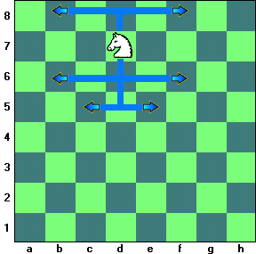

Python Programlamaya Giriş 10 - Fonksiyon Alıştırmaları
Python fonksiyonlarının uygulamalarının ardından, şimdi kendiniz uygulayabileceğiniz birkaç fonksiyon alıştırması verelim. Çözümleri bulmak size ait. Buradaki alıştırmaların ötesinde, daha önceki bölümlerde verdiğimiz örnekleri de bir fonksiyona dönüştürmeyi deneyebilirsiniz. Ayrıca internet kaynaklarında pek çok değişik konuda alıştırma örneği bulabilirsiniz.
Dizinin bütün yazılarına erişmek için Python Programlamaya Giriş kategorimize bakabilirsiniz. Bu dizideki yazılar ayrıca Jupyter defterleri halinde GitHub depomuzda da mevcut.
- Fonksiyona verilen en küçük parametreyi bulma
- Fibonacci sayıları
- Satranç atının gidebileceği kareler
- Karekök fonksiyonu
- Machin formülü ile pi’yi bulmak
- İkinci derece denklem kökleri
- Mükemmel sayılar
En küçük parametre değeri
Belirsiz sayıda sayısal parametre alıp, parametreler arasındaki en küçük değeri geri veren bir fonksiyon yazın. (İpucu: Parametre paketlemesi kullandığımızda bütün parametrelerin fonksiyon içinde bir çokuza toplandığını görmüştük. Bu çokuz üzerinde bir döngüyle en küçük değeri bulabilirsiniz.)
Örnekler:
enkucuk(7)
7
enkucuk(3,1,4)
1
enkucuk(1,2,3,-1,4,-2,5)
-2Parametre listesi boş ise None dönsün (return None komutunu kullanın).
enkucuk()
NoneFibonacci sayıları
İlk n Fibonacci sayısını bir liste halinde veren bir fonksiyon yazın. Örnekler:
fib(0)
[]
fib(1)
[1]
fib(2)
[1, 1]
fib(10)
[1, 1, 2, 3, 5, 8, 13, 21, 34, 55]Satranç atının hareketi
Satranç tahtasında at L biçiminde hareket eder: Şekilde gösterildiği gibi bir yönde iki kare, sonra ona dik olarak bir kare.

Atın tahtadaki pozisyonunu iki parametre olarak alan ve gidebileceği karelerin listesini veren bir fonksiyon yazın. Her kareyi bir ikili çokuzla gösterin, ('a',1), ('g',5) gibi. At tahtanın sınırlarına yakınsa, tahtanın dışına çıkacak hamleleri eleyin.
Örnek:
athareket('d', 7)
[('c',5),('e',5),('b',6),('f',6),('b',8),('f',8)]
athareket('f',3)
[('d',2),('d',4),('e',1),('e',5),('g',5),('g',1),('h',4),('h',2)]Karekök fonksiyonu
Verilen bir \(N\) sayısının karekökünü bulmak için Babil döneminden beri kullanılan tekrarlamalı (iteratif) bir yöntem vardır: Önce, karekök için bir tahminde bulunun ve buna \(x_0\) deyin. Bir sonraki tahminimiz \[x_1 = \frac{1}{2}\left(x_0 + N/x_0\right)\] olacak. Genel olarak, \[x_{n+1} = \frac{1}{2}\left(x_n + N/x_n\right)\] kuralıyla ardışık iterasyonlar yaparsak, \(x_n\) değerleri hızlıca \(N\)’nin kareköküne yakınsayacaktır.
Bu yöntem, fonksiyon köklerini bulmak için kullanılan en iyi algoritmalardan biri olan Newton yönteminin özel bir durumudur.
Bu algoritmayı kullanarak, bir sayının karekökünü veren bir fonksiyon yazın.
Parametreler: * Karekökü alınacak sayı N. * İlk tahmin x0. * Tolerans tol. Varsayılan değer \(10^{-10}\). * Azami iterasyon sayısı maxiter. Varsayılan değer 10.
Sonuç: * N’nin karekökü için en iyi tahmin
Fonksiyon içinde, yukarıdaki formülü tekrar tekrar işleterek daha iyi tahminlere ulaşan bir döngü yazın. Her adıımda, hata değeri \(|x_n^2 - N|\) ile tolerans tol karşılaştırılsın. Hata,i toleransın altına düşünce döngü sonlansın. Ayrıca, döngü iterasyonları sayısı maxiter’den fazla olursa yine döngü sonlansın. Bu durumda bir uyarı mesajı ekrana yazılsın ve fonksiyon döngüde elde edilen son sonucu versin.
Örnekler:
karekok(N=10, x0=1)
3.162277660168379
karekok(N=10000, x0=0.1)
10 iterasyonda sonuca ulaşılamadı. 'hata' veya 'maxiter' değerlerini değiştirin
103.38412392442035
karekok(N=10000, x0=0.1, maxiter=15)
100.0Machin formülü ile Pi sayısı
Pi sayısını hesaplamak için birçok yöntem vardır. Bunların hepsi teorik olarak \(\pi\)’ye eşit olsalar da, bazıları belli bir hassasiyete ulaşmak için çok fazla hesap gerektirdikleri için pratikte işe yaramazlar. 1706’da John Machin \(\pi\) sayısı için hızlı yakınsayan, böylelikle az sayıda terimle yüksek doğruluk sağlayan bir formül yayınladı.
\[\pi = 16 \arctan \frac{1}{5} - 4 \arctan \frac{1}{239}\]
Bu formüldeki arktanjant fonksiyonunu hesaplamak için bir Taylor serisi kullanılabilir.
\[\arctan x = x - \frac{1}{3}x^3 + \frac{1}{5}x^5 - \frac{1}{7} x^7 + \cdots\]
Machin formülünde arktanjantı alınan sayılar küçük oldukları için, serinin az sayıda elemanıyla yüksek hassasiyeti sağlamak mümkün olacaktır.
Machin formülü ile \(\pi\) sayısını yaklaşık olarak hesaplayan bir fonksiyon yazın. Fonksiyon sadece tolerans değerini parametre olarak alsın (varsayılan değer \(10^{-8}\)). Arktanjant fonksiyonu için matematik kütüphanesi kullanmayın, Taylor serisindeki terimleri gerekli toleransı sağlayana kadar ekleyin. Yeni eklenen terim toleransın altına düştüğünde durun.
İkinci derece denklemin kökleri
Bir \(x\) değişkeni için genel ikinci derece denklem \(ax^2 + bx + c = 0\) olarak ifade edilir. Eğer \(a\neq 0\) ise, denklemin iki kökü
\[x_{1,2} = \frac{-b \pm \sqrt{b^2-4ac}}{2a}\]
formülüyle bulunur. Eğer \(a=0\) ise çözüm \(x = -c/b\) olur.
Denklemin katsayıları a, b ve c’yi parametre olarak alan ve denklemin köklerini (ikili çokuz olarak) veren bir fonksiyon yazın. Fonksiyon a’nın 0 olduğu özel durumda tekli çokuz vermeli.
Diskriminantın (\(b^2 -4ac\)) negatif olduğu durumlarda kökler reel sayı değil karmaşık sayı olacaktır. Bu durumlarda da fonksiyonun hatasız çalışması için, karmaşık sayıli matematik kütüphanesini import cmath komutuyla yükleyip, karekök almak için cmath.sqrt() fonksiyonunu kullanabilirsiniz.
Örnekler:
kökler(1,0,-4)
((2+0j), (-2+0j))
kökler(1,0,4)
(2j, -2j)
kökler(0,1,4)
-4.0Mükemmel sayılar
Bir sayı bütün çarpanlarının (1 dahil, kendisi hariç) toplamına eşitse, o sayıya mükemmel sayı denir. Sözgelişi, 1+2+3=6 olduğundan, 6 bir mükemmel sayıdır.
Verilen bir sayı “mükemmel”se True, değilse False veren bir fonksiyon yazın. Örnek:
mukemmel(6)
True
mukemmel(10)
FalseBu fonksiyonu kullanarak, 10 000’den küçük bütün “mükemmel” sayıları bulun.